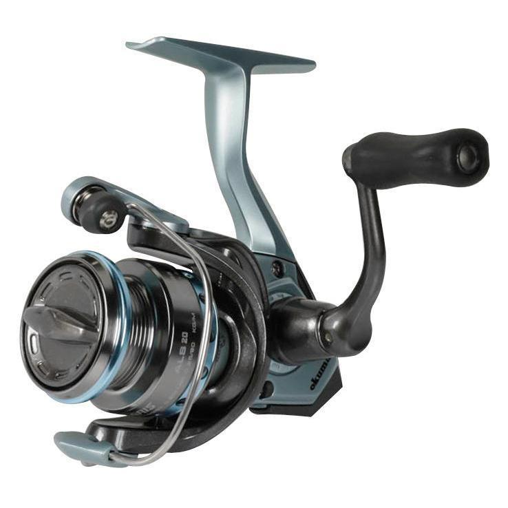

ReelCalc Reel Setup Guide
Okuma Alaris 20 Line Capacity & Reel Setup Guide
If you are setting up the Okuma Alaris 20 for everyday trout and panfish fishing with light mono, its 4 lb / 140 yards mono rating is a useful starting point. The rigid metal handle supports controlled retrieves, while the oiled-felt drag releases line under load. Choose your exact line in the preloaded calculator below to estimate a full spool or optional backing beneath a shorter working length.